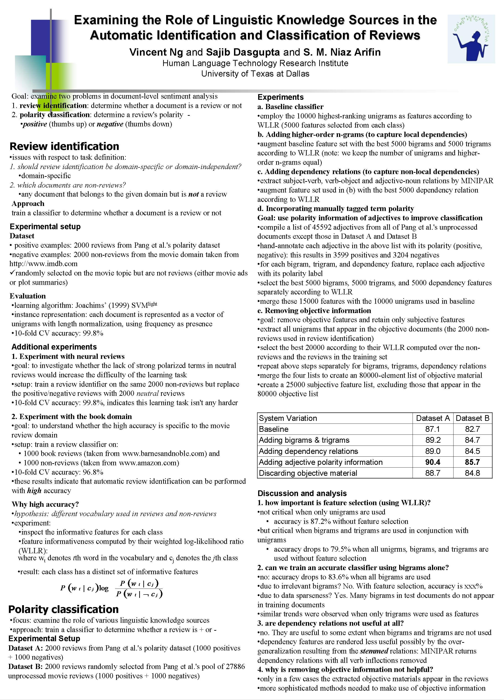

Examining the Role of Linguistic Knowledge Sources in the
Automatic Identification and Classification of Reviews
Vincent Ng, Sajib Dasgupta, and S. M. Niaz Arifin.
Proceedings of the COLING/ACL 2006 Main Conference Poster Sessions, pp. 611-618, 2006.
Click here for the
PostScript or PDF
version.
Abstract
This paper examines two problems in document-level sentiment analysis:
(1) determining whether a given document is a review or not, and
(2) classifying the polarity of a review as positive or negative.
We first demonstrate that review identification can be performed
with high accuracy using only unigrams as features.
We then examine the role of four types of simple linguistic knowledge
sources in a polarity classification system.
BibTeX entry
@InProceedings{Ng+Dasgupta+Arifin:06a,
author = {Vincent Ng and Sajib Dasgupta and S. M. Niaz Arifin},
title = {Examining the Role of Linguistic Knowledge Sources in the Automatic Identification and Classification of Reviews},
booktitle = {Proceedings of COLING/ACL 2006 Main Conference Poster Sessions},
pages = {611--618},
year = 2006
}
